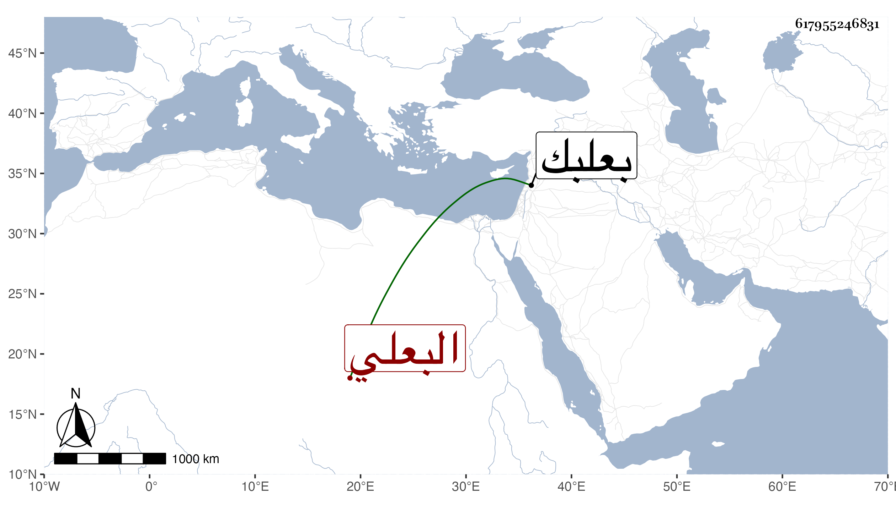

0902Sakhawi.DawLamic.ITO20230111-ara1.EIS1600.617955246831
Biography ID: 617955246831
582
فضل الله بن محمد بن حسن بن يعقوب البعلي ولد في سنة ست وثمانين وسبعمائة ببعلبك وأحضر بها في الخامسة على محمد بن علي اليونيني والشريف محمد ابن محمد بن إبراهيم الحسيني ومحمد بن محمد بن أحمد الجردي صحيح البخاري ثم سمعه على أبي الفرج عبد الرحمن بن محمد بن الزعبوب ، وحدث سمع منه الفضلاء وكان بزازا . مات قبل رحلتي .
